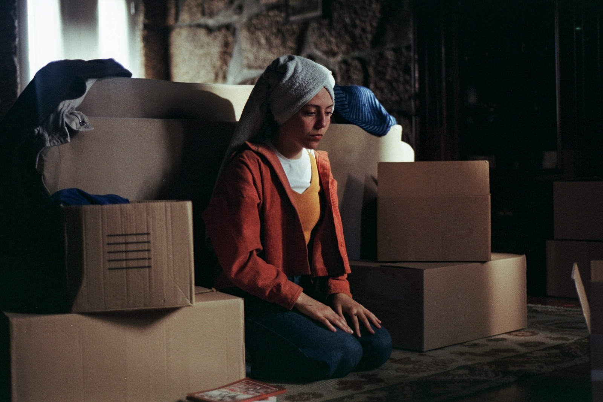

Marta Filipe de Azevedo
martafilipedeazevedo@gmail.com
Marta Azevedo (n. 2004) é fotógrafa e escritora, atualmente a terminar a licenciatura em Filosofia na Universidade do Porto. No seu trabalho procura explorar linguagens díspares por onde possa gesticular lugares outros e fazer mundo, construir espaço e identidade.
Encontra na fotografia um meio comprometido de relação com o corpo político; usando a imagem como veículo de memória e denúncia.
Envolvida em projetos de ação social e cultural, integra o Núcleo de Apoio à Inclusão da Universidade do Porto, colaborou com a ONG Dream Big Cambodia e foi embaixadora portuguesa em iniciativas de cidadania jovem promovidas pela EYCA. Em 2025, foi selecionada para a residência artística Lisboa/Praia, promovida pela Câmara Municipal de Lisboa e Camões, I.P., onde desenvolveu uma investigação visual sobre migração, herança e identidade afro-diaspórica, a partir de narrativas de mulheres da sua família entre Lisboa e Cabo Verde.
'Azul Penumbra'- Fotografia de Cena
